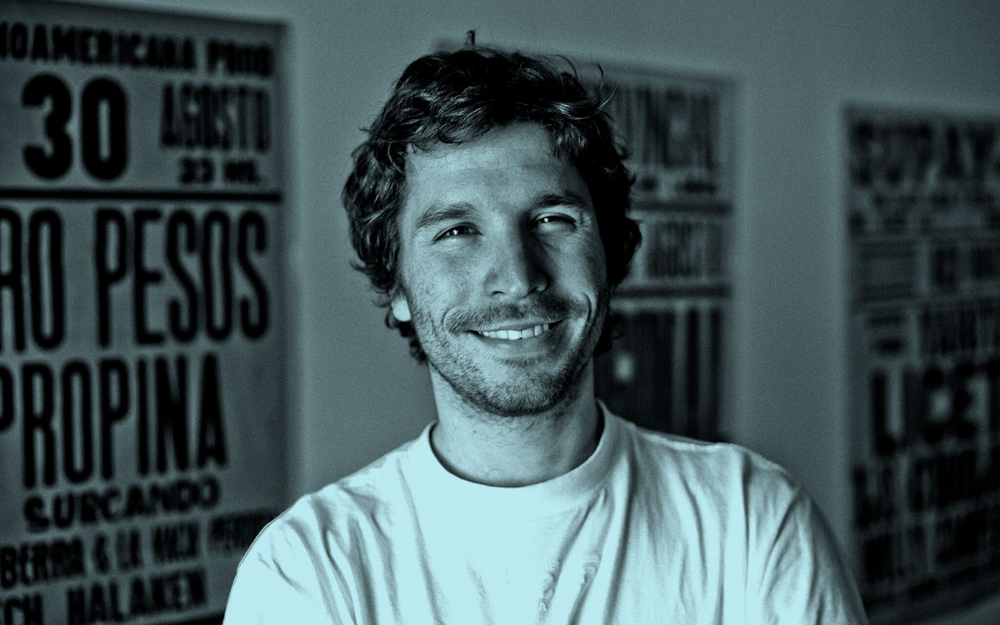

Manchea
Manchea é un taller nacido no 2014 na Coruña dedicado en grande medida a tentar que non se perdan as técnicas tradicionais e os métodos analóxicos de impresión, nomeadamente a imprenta tipográfica. Aprendemos facendo e a través da experimentación.
Tono Galán, artista multiindisciplinado fixo pintura e escultura durante 25 anos e nun momento determinado cambiou eses procedementos rumbo ás artes gráficas sen arrepentirse en ningún momento da andaina escollida. Adorador das máquinas a manivela.
Laura Sánchez, tradutora de formación, quizais por iso sente unha grande animadversión polos procesadores de texto e as impresoras modernas, e prefire indubidablemente entenderse con prensas e tipos analóxicos.
Juanjo López
Deseñador de tipografías, gráfico, letrista e impresor de «letterpress». Juanjo López estudou Belas Artes, onde empezou a combinar o seu traballo e gusto polo feito a man cun perfil máis dixital. Membro da Familia Plómez, un colectivo tipográfico pre-dixital con base en Madrid, e Unostiposduros.com, unha web sobre tipografía en español. É, ademais, profesor de tipografía, lettering e «letterpress» en cursos especializados.
Pablo Pivetta

Graduado na carreira de Deseño Gráfico na Universidade de Bos Aires (FADU-UBA), fotógrafo e coleccionista de tipos móbiles. Pablo Pivetta combina todos estes intereses na realización de curtas documentais. «Los últimos» é o seu primeiro filme.
Cibrán Rico
Cibrán Rico López é arquitecto de formación pero xa perdeu a conta dos anos que leva deseñando en desescribir, sempre da man de Suso Vázquez Gómez. Na primavera do 2015 inauguraron a editora Fabulatorio cun primeiro título composto cunha Venus de 12 puntos e impreso nunha Minerva, tipografía en chumbo, por suposto. En ambos os proxectos, estudio e editora, o deseño non se entende sen o proceso de produción.